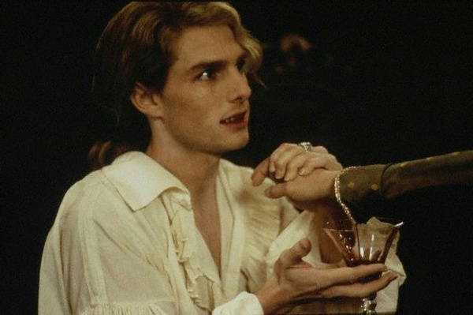

HELLO EVERYONE!!
This is the vampire Lestat
What do I look like
The first thing you need to know, is that I am very very good looking. Now I am not saying this because I am arragont (ok, maybe a little, but can you blame me?), but because my good looks are partly the reason why I am what I am today. It was my golden hair and vivid blue eyes that first caught the old vampire Magnus's eye and resulted in me being turned into the beautiful blood-sucking monster I am today.
But I'm beside myself. Back to the topic. I am six feet tall (still rather tall today, and even more impresive in my time), with a lean but musclar build. My hair is the color of gold, thick and shiny, like a lion's main. I have eyes as blue as safirs, framed by thick, long lashes that's a few shades darker than my hair. I have a wide and generous mouth, that is almost too wide for my face, but not quite. It makes my smile either very infectaus, or, in some cases, monstrous and cruel.